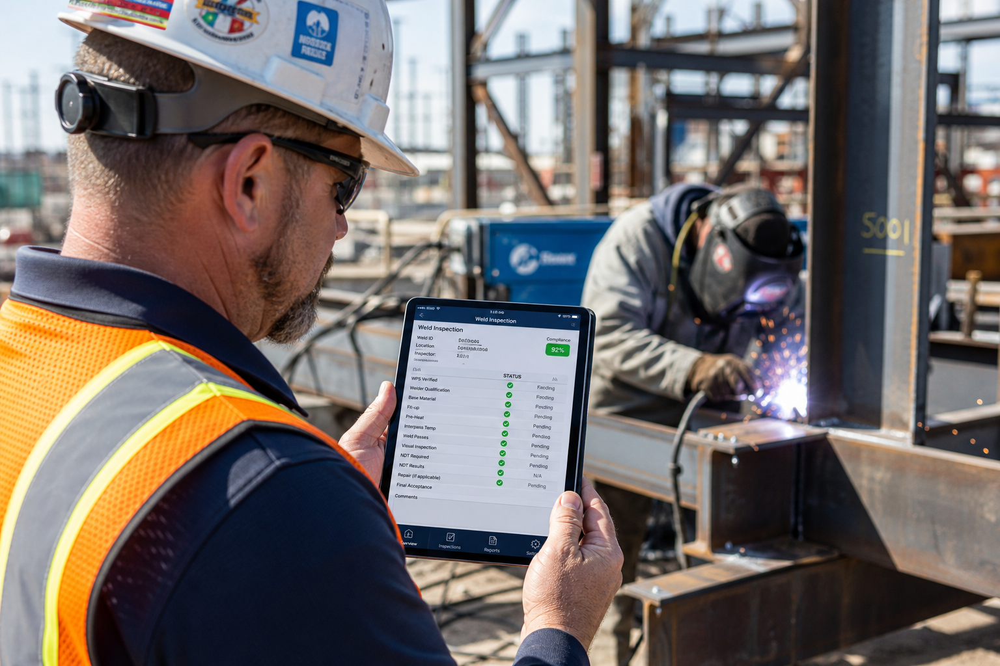

Prepare
Structure projects, weld context, procedures and responsibilities before inspection work begins.
Platform
Connect project context, welds, inspections, procedures, evidence and documentation without rebuilding the dossier at handover.

Workflow
Organise inspection information around the weld, the project and the resulting documentation.
Structure projects, weld context, procedures and responsibilities before inspection work begins.
Record status, findings and evidence against the relevant weld record.
Review connected documentation from a controlled project overview.